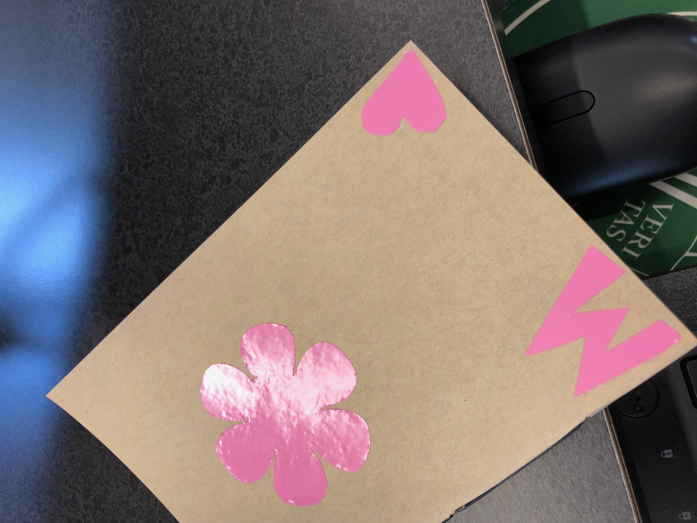

Rotation 6:
Project Description:
1. Printing Stickers!
The first assignment of this rotataion was to make two stickers with the Roland GS-24 CAMM 1 in one color. The, using the Roland 540i printer, we had to contour and cut colorful stickers. To design all the stickers, I used Corel Draw.
I printed two, one colored stickers and put them on my notebook. With the remaining sticker paper, I cut out a heart and M.
